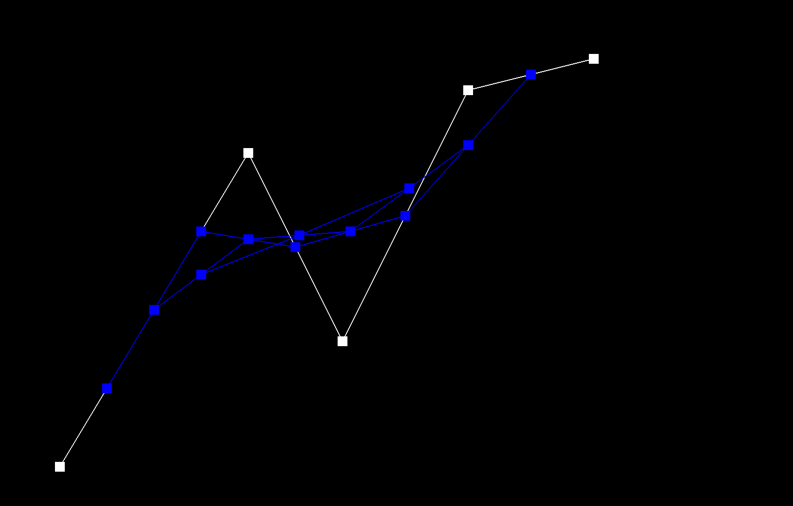

CS184/284A Spring 2025 Homework 2 Write-Up
Link to webpage:cal-cs184-student/hw-webpages-xay-writeup
Link to GitHub repository:cal-cs184-student/sp25-hw2-xhw2

Overview
TODOSection I: Bezier Curves and Surfaces
Part 1: Bezier curves with 1D de Casteljau subdivision
In this part, I pretty much implemented the de Casteljau subdivision algorithm with the given formula. However, I encounter a problem with multiplication with Vector2D.h I fixed that by implementing the condition to check if the size of the point is less than 2 then return either 0 or 1 accordingly.
evaluateStep:
std::vector BezierCurve::evaluateStep(std::vector const &points)
{
// TODO Part 1.Bezier Curves
vector res;
// Check if input vector has at least 2 points
if (points.size() < 2) {
return points;
}
for (int i = 0; i < points.size() - 1; i++)
{
Vector2D pt1 = points[i];
Vector2D pt2 = points[i+1];
Vector2D pt = (1-t)*pt1 + t*pt2;
res.push_back(pt);
}
return res;
}
Below, I show the screenshots of each step / level of the evaluation from the original control points down to the final evaluated point + a screenshot of a slightly different Bezier curve.


|

|

|
 |

|

|

|
t parameter |
Part 2: Bezier surfaces with separable 1D de Casteljau
For each row of control points in the grid, evaluate a Bezier curve at parameter u using the standard de Casteljau algorithm. This gives us n intermediate points. Then, take these n intermediate points and evaluate another Bezier curve at parameter v, again using the de Casteljau algorithm.
The implementation is quite similar to the previous part. So for this part, I follow the implementation from the previous part and use the de Casteljau algorithm to evaluate a Bezier surface. Then for BezierPatch::evaluate1D this is a recursive function for Casteljau's algorithm, it continues until there's only one point left. Then base case return the single point when the vector size is 1. Otherwise, it calls BezierPatch::evaluateStep and then recursively calls itself with the intermediate points. Finally, for BezierPatch::evaluate, it calls BezierPatch::evaluate1D with the correct number of control points to get the final Bezier surface.
evaluateStep:
// Perform one step of the de Casteljau algorithm
std::vector<Vector3D> evaluateStep(const std::vector<Vector3D>& points, double t) {
std::vector<Vector3D> res;
for (int i = 0; i < points.size() - 1; i++) {
Vector3D pt1 = points[i];
Vector3D pt2 = points[i+1];
Vector3D pt = (1-t)*pt1 + t*pt2;
res.push_back(pt);
}
return res;
}
evaluate1D:
// Recursive 1D de Casteljau algorithm
Vector3D evaluate1D(const std::vector<Vector3D>& points, double t) {
if (points.size() == 1) {
return points[0];
}
std::vector<Vector3D> inter = evaluateStep(points, t);
return evaluate1D(inter, t);
}
evaluate:
// Evaluate the entire Bezier surface at (u,v)
Vector3D evaluate(double u, double v) {
std::vector<Vector3D> curvePoints;
for (int i = 0; i < controlPoints.size(); i++) {
Vector3D point = evaluate1D(controlPoints[i], u);
curvePoints.push_back(point);
}
return evaluate1D(curvePoints, v);
}
Section II: Triangle Meshes and Half-Edge Data Structure
Part 3: Area-weighted vertex normals
For this part, I initalize the zero vector for each accumulated normaland create a loop that would iterated through the face, where I skip if it's a boundary face. Then I calculate the normal for each face and add it to the accumalted normal by using the cross() dot product *0.5 to get the area. Finally, I normalize the accumulated normal with area * the face area and assign it to the vertex.


Part 4: Edge flip
In this part, I first contructs the Half Edge with the Half-Edge using HalfedgeIter and organized elements by type (halfedges, vertices, edges, faces). I also added a critical check to prevent flipping boundary edges whihc would create an invalid mesh.
I used the setNeighbors method to update all halfedge connections in a single call in order.
EdgeIter HalfedgeMesh::flipEdge(EdgeIter e0) {
// This method should flip the given edge and return an iterator to the flipped edge.
HalfedgeIter h0 = e0->halfedge();
HalfedgeIter h1 = h0->next();
HalfedgeIter h2 = h1->next();
HalfedgeIter h3 = h0->twin();
HalfedgeIter h4 = h3->next();
HalfedgeIter h5 = h4->next();
HalfedgeIter h6 = h1->twin();
HalfedgeIter h7 = h2->twin();
HalfedgeIter h8 = h4->twin();
HalfedgeIter h9 = h5->twin();
// Vertices
VertexIter v0 = h0->vertex();
VertexIter v1 = h3->vertex();
VertexIter v2 = h2->vertex();
VertexIter v3 = h5->vertex();
EdgeIter e1 = h1->edge();
EdgeIter e2 = h2->edge();
EdgeIter e3 = h4->edge();
EdgeIter e4 = h5->edge();
FaceIter f0 = h0->face();
FaceIter f1 = h3->face();
// Check for boundary faces - cannot flip boundary edges
if (f0->isBoundary() || f1->isBoundary()) {
return e0;
}
// Rewire halfedge connections
h0->setNeighbors(h5, h3, v3, e0, f0);
h3->setNeighbors(h2, h0, v2, e0, f1);
h1->setNeighbors(h0, h6, v2, e1, f0);
h4->setNeighbors(h3, h8, v3, e3, f1);
h2->setNeighbors(h1, h7, v0, e2, f0);
h5->setNeighbors(h4, h9, v1, e4, f1);
// Update vertex halfedge pointers
v0->halfedge() = h2;
v1->halfedge() = h5;
v2->halfedge() = h1;
v3->halfedge() = h4;
// Update face halfedge pointers
f0->halfedge() = h0;
f1->halfedge() = h3;
e0->halfedge() = h0;
return e0;
}
Debugging Techniques I used:
- Geometric Visualization:
- Drawing diagrams helps track how connectivity changes
- Systematic Testing:
- Testing on simple meshes first (like a tetrahedron) before complex ones
- Verifying that mesh invariants are maintained after the flip


Part 5: Edge split
To make thing clear, I first gathered all the necessary mesh elements following the same implementaion strategy from the previous parts. Then I check if either of the face represents ab boundary loop.
next part is I create a new vertex at the midpont of the edge to be split by taking v0->position + v1->position / 2. Then I update the halfedge pointers for the new vertex and the faces connected to the edge by setting their halfedges to the new vertex.
The most important implementation detail is that I need to update the halfedge pointers for the new vertex and the faces connected to the edge by setting their halfedges to the new vertex.
Implementaion Details:
VertexIter HalfedgeMesh::splitEdge( EdgeIter e0 )
{
// TODO Part 5.
// This method should split the given edge and return an iterator to the newly inserted vertex.
// The halfedge of this vertex should point along the edge that was split, rather than the new edges.
HalfedgeIter h0 = e0->halfedge();
HalfedgeIter h3 = h0->twin();
VertexIter v0 = h0->vertex();
VertexIter v1 = h3->vertex();
FaceIter f0 = h0->face();
FaceIter f1 = h3->face();
// Get the next halfedges around each face
HalfedgeIter h1 = h0->next();
HalfedgeIter h2 = h1->next();
HalfedgeIter h4 = h3->next();
HalfedgeIter h5 = h4->next();
// Get the third vertex of each face
VertexIter v2 = h1->vertex();
VertexIter v3 = h4->vertex();
if (f0->isBoundary() || f1->isBoundary()) {
return VertexIter();
}
// New V
VertexIter v_new = newVertex();
v_new->position = (v0->position + v1->position) / 2.0;
// Create new halfedges
HalfedgeIter h6 = newHalfedge(); // v_new -> v2
HalfedgeIter h7 = newHalfedge(); // v2 -> v_new
HalfedgeIter h8 = newHalfedge(); // v_new -> v3
HalfedgeIter h9 = newHalfedge(); // v3 -> v_new
EdgeIter e1 = newEdge(); // v_new -> v2
EdgeIter e2 = newEdge(); // v_new -> v3
// Update connectivity
h0->vertex() = v0;
h0->next() = h6;
h0->face() = f0;
h6->vertex() = v_new;
h6->next() = h2;
h6->twin() = h7;
h6->edge() = e1;
h6->face() = f0;
h2->next() = h0;
h2->face() = f0;
h3->vertex() = v_new;
h3->next() = h4;
h3->face() = f1;
h4->next() = h9;
h4->face() = f1;
h9->vertex() = v3;
h9->next() = h3;
h9->twin() = h8;
h9->edge() = e2;
h9->face() = f1;
h7->vertex() = v2;
h7->next() = h1;
h7->twin() = h6;
h7->edge() = e1;
h7->face() = f0;
h1->vertex() = v1;
h1->next() = h7;
h1->face() = f0;
h8->vertex() = v_new;
h8->next() = h5;
h8->twin() = h9;
h8->edge() = e2;
h8->face() = f1;
h5->vertex() = v1;
h5->next() = h8;
h5->face() = f1;
e0->halfedge() = h0;
e1->halfedge() = h6;
e2->halfedge() = h8;
v0->halfedge() = h0;
v1->halfedge() = h1;
v_new->halfedge() = h3;
f0->halfedge() = h0;
f1->halfedge() = h3;
return v_new;
}


Debugging:
Compare to the previous part, I implemented this function like the way I would draw it out in paper and make the code follow that way which would be it easier to debug and for each step I would log out the current value on each line to make sure I'm on the right track
Boundary Case:I start by first determine which face is the boundary face. I then create only two new halfedge instead of four with only split the non-boundary face, preserving the boundary. For the rest I keep maintaining the proper connectivity between the new vertex and both the boundary and non-boundary regions
if (!f0->isBoundary() && !f1->isBoundary()) {
HalfedgeIter h6 = newHalfedge(); // v_new -> v2
HalfedgeIter h7 = newHalfedge(); // v2 -> v_new
HalfedgeIter h8 = newHalfedge(); // v_new -> v3
HalfedgeIter h9 = newHalfedge(); // v3 -> v_new
EdgeIter e1 = newEdge(); // v_new -> v2
EdgeIter e2 = newEdge(); // v_new -> v3
// Update connectivity
h0->vertex() = v0;
h0->next() = h6;
h0->face() = f0;
h6->vertex() = v_new;
h6->next() = h2;
h6->twin() = h7;
h6->edge() = e1;
h6->face() = f0;
h2->next() = h0;
h2->face() = f0;
h3->vertex() = v_new;
h3->next() = h4;
h3->face() = f1;
h4->next() = h9;
h4->face() = f1;
h9->vertex() = v3;
h9->next() = h3;
h9->twin() = h8;
h9->edge() = e2;
h9->face() = f1;
h7->vertex() = v2;
h7->next() = h1;
h7->twin() = h6;
h7->edge() = e1;
h7->face() = f0;
h1->vertex() = v1;
h1->next() = h7;
h1->face() = f0;
h8->vertex() = v_new;
h8->next() = h5;
h8->twin() = h9;
h8->edge() = e2;
h8->face() = f1;
h5->vertex() = v1;
h5->next() = h8;
h5->face() = f1;
e0->halfedge() = h0;
e1->halfedge() = h6;
e2->halfedge() = h8;
v0->halfedge() = h0;
v1->halfedge() = h1;
v_new->halfedge() = h3;
f0->halfedge() = h0;
f1->halfedge() = h3;
} else {
// Handle boundary case
FaceIter non_boundary_face;
HalfedgeIter boundary_he, non_boundary_he;
// Determine face boundary
if (f0->isBoundary()) {
non_boundary_face = f1;
boundary_he = h0;
non_boundary_he = h3;
} else {
non_boundary_face = f0;
boundary_he = h3;
non_boundary_he = h0;
}
HalfedgeIter h_new = newHalfedge();
HalfedgeIter h_new_b = newHalfedge();
EdgeIter e_new = newEdge();
non_boundary_he->vertex() = v0;
non_boundary_he->next() = h_new;
h_new->vertex() = v_new;
h_new->next() = non_boundary_he->next()->next();
h_new->twin() = h_new_b;
h_new->edge() = e_new;
h_new->face() = non_boundary_face;
boundary_he->vertex() = v_new;
h_new_b->vertex() = v1;
h_new_b->next() = boundary_he;
h_new_b->twin() = h_new;
h_new_b->edge() = e_new;
h_new_b->face() = boundary_he->face();
e0->halfedge() = non_boundary_he;
e_new->halfedge() = h_new;
v_new->halfedge() = boundary_he;
non_boundary_face->halfedge() = non_boundary_he;
}
return v_new;
Part 6: Loop subdivision for mesh upsampling
TODO
Additional Notes (please remove)
- You can also add code if you'd like as so:
code code code - If you'd like to add math equations,
- You can write inline equations like so: \( a^2 + b^2 = c^2 \)
- You can write display equations like so: \[ a^2 + b^2 = c^2 \]